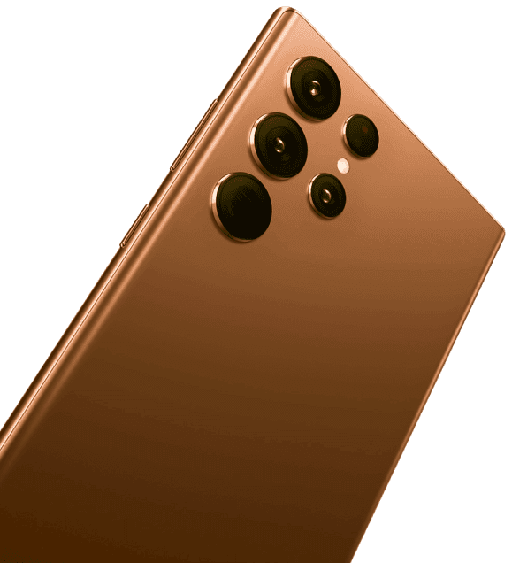

<section class="info__section">
    
    
    <div class="container">
        <div class="info__section-wrapper">
            <h2 class="info__title">
                Mengapa kita menjual <br>
                Samsung S22 Ultra dengan murah?
            </h2>
            <ul class="info__list">
                <li class="info__list-item info__list-item1">
                    Karena kami adalah grosir besar dan memasok smartphone Samsung ke semua rantai ritel utama. Perusahaan kami bergerak dalam pembelian smartphone yang diproduksi di Korea Selatan.
                </li>
                <li class="info__list-item info__list-item2">
                    Biasanya ponsel Samsung untuk dirakit di Cina, serta untuk negara-negara dunia ketiga. Smartphone kami dibedakan oleh kualitas dan keandalan asli, terbuat dari bahan premium, telah melewati semua sertifikasi kualitas, dan biaya lebih murah dibanding harga pembelian.
                </li>
                <li class="info__list-item info__list-item3">
                    Pemeliharaan layanan Samrphone dilakukan oleh pihak kami, bahkan dalam hal penggantian atau mengembalikan smarphone ke toko hardware tempat pembelian. Anda punya pilihan: membayar lebih untuk keunggulan toko atau memesan smartphone dengan harga yang wajar di tangan pertama!
                </li>
            </ul>
        </div>
    </div>
</section>